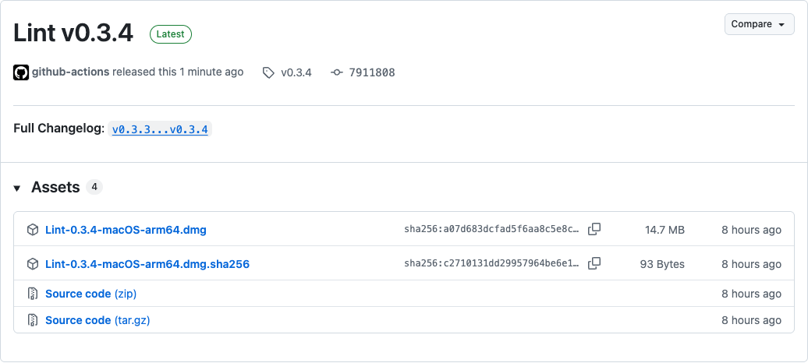

1
Download the DMG下載 DMG
Open the latest release on GitHub and click Lint-0.3.4-macOS-arm64.dmg under Assets. A newer release has a newer number in the name.
打開 GitHub 上的最新版本，在 Assets 下點 Lint-0.3.4-macOS-arm64.dmg。之後的版本檔名裡的版本號會不同。
The DMG is in your Downloads folder.
「下載項目」資料夾裡有這個 DMG。

.dmg file under Assets.在 Assets 下點 .dmg 檔。Optional: to check the download, also get Lint-0.3.4-macOS-arm64.dmg.sha256, then run shasum -a 256 -c Lint-0.3.4-macOS-arm64.dmg.sha256 in Terminal, in the folder that holds both files. It prints OK.
選用：想確認下載無誤，可以一併下載 Lint-0.3.4-macOS-arm64.dmg.sha256，在放著這兩個檔案的資料夾打開「終端機」，執行 shasum -a 256 -c Lint-0.3.4-macOS-arm64.dmg.sha256，會印出 OK。